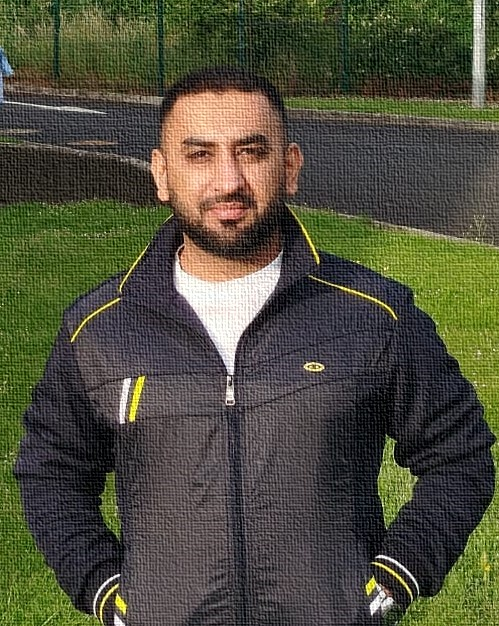

i.
Federated Learning
Designing privacy-preserving training pipelines that scale across distributed clients without sacrificing model utility.
PhD Researcher in Computer Science at the University of Limerick, building privacy-preserving and interpretable machine learning frameworks — where federated architectures, evolutionary algorithms, and green AI meet.

I'm a PhD researcher at the University of Limerick (Lero, BDS Group), working under the supervision of Prof. Conor Ryan.
My research sits at the intersection of privacy-preserving machine learning and interpretability. I'm developing frameworks that integrate ensemble methods through Grammatical Evolution into federated architectures — aligned with responsible AI and computational efficiency in distributed environments.
Before Limerick, I completed my MS in Computer Science at the Institute of Space Technology with Summa Cum Laude honors and Rank 1 (CGPA 4.0/4.0), and earned a Gold Medal for my BSc in Computer Engineering at UET Taxila.
Designing privacy-preserving training pipelines that scale across distributed clients without sacrificing model utility.
Using Grammatical Evolution to construct interpretable ensemble models that adapt to heterogeneous data environments.
Building transparent learning systems where decisions can be traced, audited, and trusted — especially in healthcare contexts.
Quantifying the energy footprint of ML workloads and engineering computationally efficient alternatives for sustainable AI.
MPI-driven parallelization strategies to accelerate CNN training and federated workflows across multi-node clusters.
Exploring generative architectures for data augmentation in low-resource and privacy-sensitive learning regimes.
Discover Internet of Things, 5, 100.
Studies in Health Technology and Informatics, 327, 1225–1229.
26th International Multi-Topic Conference (INMIC), IEEE.
International Conference on AI and the Digital Economy (CADE), IET.
International Conference on AI and the Digital Economy (CADE), IET.
Assisting in undergraduate and graduate computer science courses at UL. Academia
Conducted labs in Computer Vision, Machine Learning, Information Security, Digital Image Processing, Embedded Systems, and more. Supervised AI/CV projects and implemented MPI-based parallelization for ML optimization. Academia
Built OpenCV + Raspberry Pi interactive display systems, gesture-based presentation control, and virtual whiteboard solutions. Industry
Automated scoreboards using PIC microcontrollers and IR sensors. Designed DTMF-controlled robotic cars, Bluetooth locks, and data loggers. Industry
Worked on hardware interfacing for pathology lab and medical diagnostic equipment. Industry
A Python library for real-time CPU, memory, and power monitoring during model training — built to analyze the energy footprint of ML workloads.
Materials and example code for parallel programming with MPI4Py, applied to machine learning workloads.
A practical workshop covering common Python security vulnerabilities and how to prevent them through hands-on coding exercises and secure development practices.
Comprehensive AI workshop materials covering practical machine learning, computer vision, and deep learning in Python.
Real-time system monitoring dashboard built with Python and ttkbootstrap — CPU, RAM, temperature, clock frequency, and power.
Comparison of programming languages with respect to energy consumption — a benchmarking study.
Hands-on implementations and tutorials for evolutionary computation, genetic algorithms, and grammatical evolution.
If your work touches federated learning, evolutionary methods, explainable AI, or sustainable computing — I'd love to hear from you.